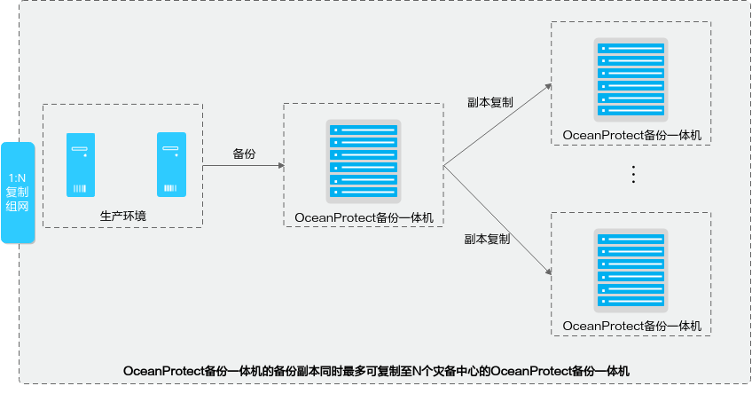
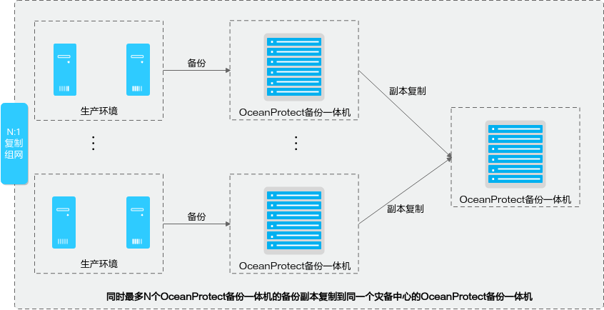
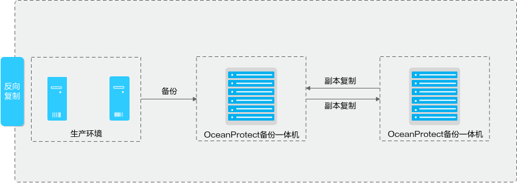
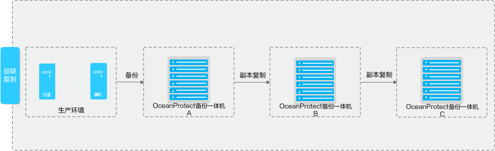

创建复制前，需要确保已完成复制网络组网并满足相关网络要求。本节介绍复制网络要求及组网支持情况。
本章节示意图均以OceanProtect X系列备份一体机为例进行说明。
复制网络要求
对于复制功能，OceanProtect的复制网络与备份网络使用相同的接口模块。复制网络的详细要求如表1所示。
表1 复制网络要求项目
|
网络要求
|
|---|
复制网络组网
|
主从端复制网络的组网连线可参考产品对应型号的《安装指南》中的“组网规划”。
|
复制网络协议
|
TCP/IP协议。
|
IP地址
|
详细配置要求可参考产品对应型号的《安装指南》中的“组网规划”。
|
IP地址类型
|
IPv4/IPv6。
|
网络质量要求
|
- 往返时延≤100ms。
- 带宽≥10MB。
- 丢包率<0.1%。
|
管理网络组网
|
如果您规划使用管理IP添加复制目标集群，请确保主端和从端的管理网络连通。
|
复制组网
OceanProtect支持的复制组网类型如下：
- 支持1:1复制。
- 1:N复制（N最大为4）。
- 支持N:1复制（对于OceanProtect X系列备份一体机，N最大为32；对于OceanProtect E1000，N最大为16）。
- 支持反向复制。
- 支持级联复制（即A->B->C复制）。
图1 1:N复制

图2 N:1复制

图3 反向复制

图4 级联复制
